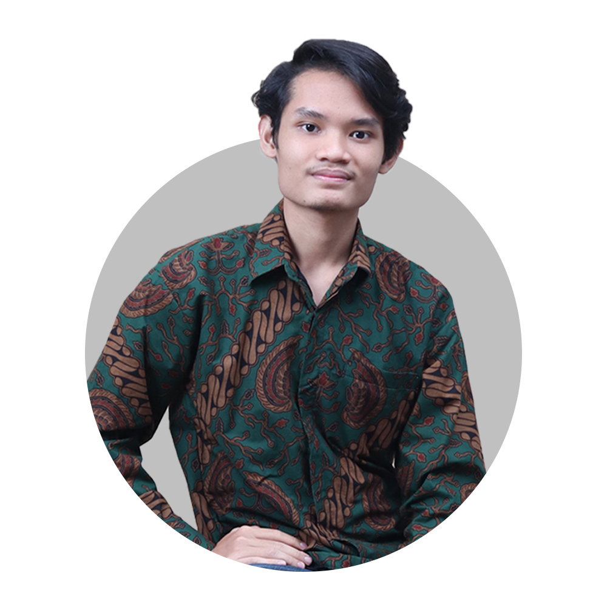
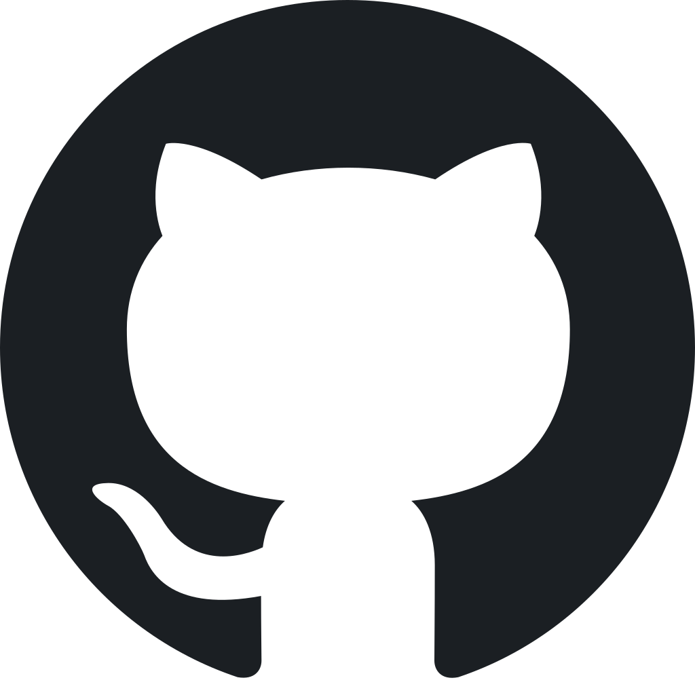
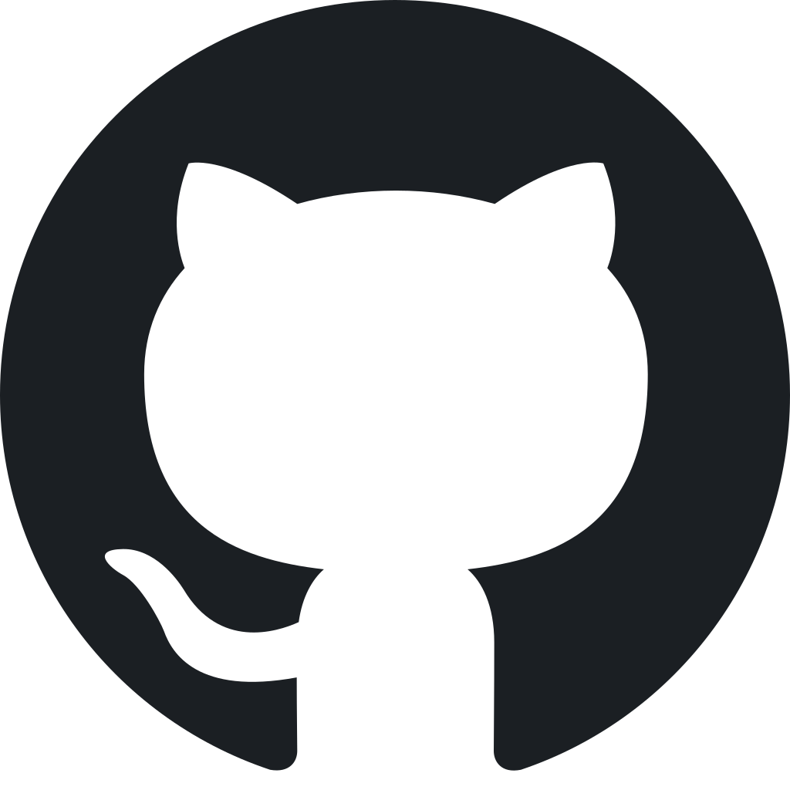
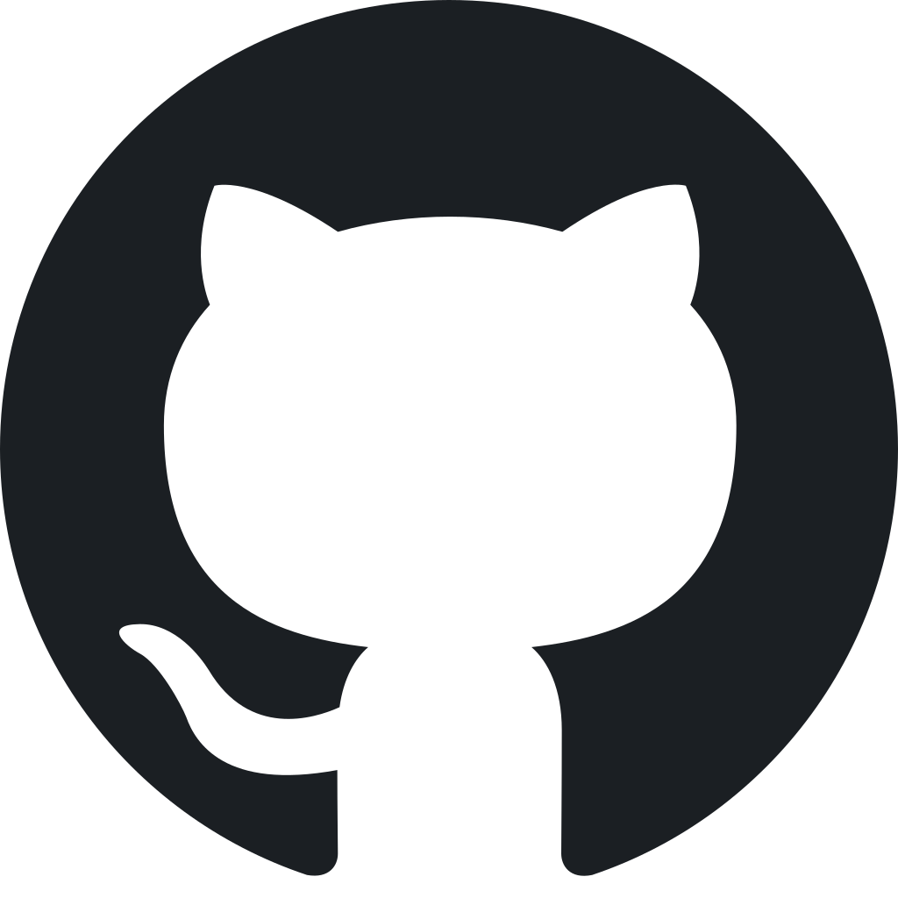

 

Muhamamad Iqbal Ramadhan
Teknik Informatika, Institut Teknologi Sepuluh Nopember

5025221274
Pemrograman Web B
About Me
Muhammad Iqbal Ramadhan is a Informatics Engineering student at the Sepuluh Nopember Institute of Technology with a passion for being involved in organizations. He has a creative personality, is quick to adapt, and possesses high motivation
Education
Sepuluh Nopember Institute of Technology
Surabaya, INA
Bachelor of Computer Science
June 2022 – Now
Major in Computer-Informatics Science
SMA Negeri 55 Jakarta
South Jakarta, INA
Major in Natural Science
July 2019 – July 2022
Skillset
- C language
- C++ language
- Design
- Editing
Toolset
- VS Code
- Dev C++
- Photoshop
- Procreate
- Microsoft Office
- Goole Office